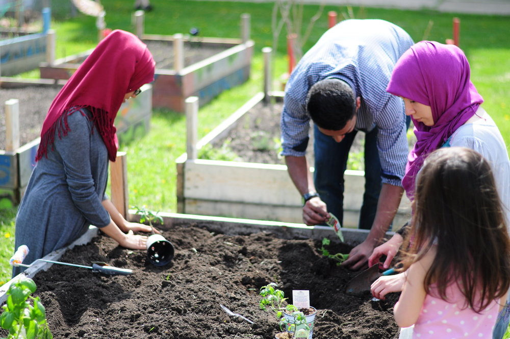

﷽
Effective Zakat in Canada
Who is this document for?
This document is intended for Canadian organizations who distribute zakat locally.
Zakat is the third pillar of Islam. As such it needs to be given the heft and weight of a major life decision; like choosing whom to marry or what career to embark on. What are its obligations? What should our intentions be towards it?
It is easy to imagine what good intentions look like for the one giving zakat, as well as the one receiving, but what should intentions be for the modern Canadian zakat distributor?
To understand what our intention should be we need to understand how zakat has been understood throughout its history, its purpose, responsibilities & the nuance of applying it effectively in our time & place. We need to interrogate underlying assumptions such as the idea that zakat mirrors other systems for poverty relief, e.g. welfare. Crucially, we also need to ask how to practically use zakat to maximize community betterment. Doing this will help us understand how to integrate zakat in our context & how to balance competing needs for finite resources.
Key Questions
- ✸
How should zakat distributors think about zakat; its responsibilities, ownership, and the rights of those entitled to it?
- ✸
How can community-service organizations that collect and distribute zakat maximize the impact of zakat to alleviate poverty in our local community?
- ✸
How can we distribute zakat in a way that balances a) the dignity of recipients and b) the need for diligence?
- ✸
How can we achieve those goals in a manner compliant with Islamic legal requirements?
Zakat in the Canadian Context
The Challenge: Being a person of faith, and by extension a community of faith, comes with challenges in every age. Facing and dealing with those challenges to become closer to the Creator is, for a Muslim, the purpose of our existence. Doing so in the modern Canadian context is where zakat-distributing organizations can help Muslims in our communities, and society-at-large.
Zakat & Society
In the Muslim faith, zakat is a religious obligation commanded by God in the Qur’an, the Muslim holy book. From the earliest days of Islam, zakat was given by the wealthy to the poor, indigent, and other disenfranchised individuals. Often this was done on an individual and independent basis. At the same time, the leader of the community would also assist with zakat distribution by offering that service for those who could not distribute their zakat themselves. Later, other zakat-distributing organizations emerged separate and apart from government institutions. In sum, while zakat is a religious obligation, there is flexibility in how it is collected, how it is distributed, and whom it is distributed to. This has been so from the earliest days of Islam.
A strong theme in Muslim scholarship of zakat is its importance not only as a rightful, Qur’anically mandated, transfer of wealth (59:7), but as having important beneficial psychological effects for individuals and the community at large: zakat payers purify their wealth and learn to control negative emotions such as greed and hoarding (which are condemned in the Qur’an as sinful); at the same time, zakat recipients feel relief from the indignity of poverty which can lead to despair and jealousy; between the two, zakat builds feelings of brotherhood/sisterhood, benevolence, generosity, solidarity and unity in community.1 Zakat is a dignified institution for poverty alleviation and social justice.
The Prophet Muhammad ﷺ taught that beneficial actions begin with a good intention. The above spiritual benefits of effective zakat distribution should be primary goals and intentions for zakat-distributing organizations and workers. It is easy to imagine what good intentions look like for the one giving zakat, and the one receiving, but what should intentions look like for zakat distributors? Should the zakat distributor err on the side of being incredibly diligent or should they favour the dignity of recipients? One option means some eligible parties would be turned away, the other the converse. Furthermore, how should the zakat distributor think about addressing systemic issues, and their interactions and engagement with Canadian systems?
Zakat Distribution
Zakat-distributing organizations should see themselves as facilitators and conduits of good, in much the same way that prayer-leaders (imams) are facilitators: like zakat, prayer is a religious obligation and a means of coming closer to the Creator. It is incumbent on some people (not all), and its performance is flexible. Like a prayer-leader at a mosque, the zakat-distributor is not a necessary part of the equation – they can either add value, or, if the task is not done properly, diminish it. When done properly, communal prayer – and zakat-distribution – has many benefits; when it is done poorly, people often feel they would be better off just doing things on their own, and often the whole community suffers.
For instance, some social scientists have suggested that institutionalised distribution is better able to address long term poverty alleviation than private giving, because an institution will have a better community reach and insight into the causes of poverty.2 This of course depends on the zakat-distributor competently fulfilling its role.
Modern Challenges
Our modern context presents certain challenges for zakat collection and distribution. For instance, how and to what extent do we (re)define traditional zakat-eligibility? What is the ruling on modern financial instruments such as salaries, stocks, bonds, RRSPs? The need to disburse under CRA guidelines also complicates the picture. For instance, traditional zakat distribution can be cash, something not generally advisable in the Canadian context as it can affect a client’s eligibility for income supports. Cash equivalents, like gift cards, poorly address this issue because they limit choice and have high admin cost – traditionally zakat is given in the form it was originally taken (so money received would be distributed as money).
Many scholars have opined on how traditional rules can be extended to deal with these and other issues. This report offers suggestions on how to incorporate scholarly advice in these and other areas.
Another challenge is how modern conceptions of zakat differ from “charity” or “social assistance programming”, and the extent to which this unique Islamic obligation should be viewed through those lenses. For instance, modern discourse on charity and social assistance often draws a distinction between the concepts of “charity” and “justice”. These distinctions impact State policies and regulations governing what counts as charitable activities, where “charity” is about voluntary giving of money or goods to the poor, and “justice” is about addressing underlying structural reasons that might create a class of poor, such as racism or classism.3 Activities addressing justice are often considered political advocacy rather than “charity.” Social justice advocates, however, criticize this distinction as arbitrary, given that as defined, “charitable giving” could end up being a band-aid solution to deeper structural issues that cause poverty.
In the Canadian context, a study of zakat workers found that, by and large, such distinctions were not made, and the common understanding of zakat was to use it for poverty relief.4 This has implications for what activities a zakat organisation may choose to fund; if we think of zakat as only charity without considering justice, we miss critical elements of our obligations and a larger opportunity to positively increase impact.
Modern Misunderstandings
Zakat distributors are often compelled to serve because of gaps they identify in the community, but most are not equipped to navigate the dual complexities of Islamic tradition and social service.
Zakat cannot be adequately understood through directly reading the Qur’an; personal interpretation misses the context in which verses were revealed and how they have been historically understood for nearly 1500 years. e.g. One may read verse 9:60, and infer that zakat can go to administrators (amilina) & anyone who supports zakat collection, but this is a highly contestable, ahistorical opinion.
Properly understanding zakat requires engaging in dialogue with those who have specialized in the field. Local scholars are an important conduit for accessing those with in-depth knowledge. Specialists should provide historical examples, citations, reasoning, and be comfortable engaging in nuanced discussions; they may also need compensation for their time.
This is similar to medicine. Trusting the internet for medical advice is flawed – even dangerous. Your family doctor is a helpful, obvious first step, but depending on the subject and the level of need, they may refer you to a specialist, like a cardiologist. A reasonable expectation is that the cardiologist will spend time with you (and potentially your family doctor) to explain a diagnosis, their reasoning, options & answer questions.
Zakat distributors should begin by engaging local scholars, developing detailed questions, expecting elaboration/dialogue, & asking for referrals to experts.
Background: Zakat Categories
“The alms are meant only for the poor and the needy and those who are in charge thereof, those whose hearts are to be reconciled, and to free those in bondage, and to help those burdened with debt, and for expenditure in the Way of Allah and for the wayfarer. This is an obligation from Allah. Allah is All-Knowing, All-Wise.”
(Qur’an 9:60)
- 1
The Poor &
- 2
Needy
Do not have enough to suffice their (& their dependents) basic needs
“Basic needs” should be assessed according to local standards & based on reliable sources. See recommendations that follow.
Are unable to earn a living through suitable work
“Suitable work” takes into consideration health & social position
May have wealth, but be separated from it
This may include refugees, people with holdings abroad, or others cut off or unable to access their wealth
- 3
Zakat Workers
Our recommendation, as will be detailed further below, is to minimize or obviate the need for using zakat in this manner through planning and alternative funding.
Traditionally/historically this category applies only if appointed/overseen by the caliph.
Some zakat-distributing organizations use this category to responsibly cover overhead for zakat distribution.
- 4
Those whose hearts are to be reconciled
e.g. New Muslims
- 5
Those purchasing their freedom
e.g. Slaves who are purchasing their freedom from their owners.
- 6
Those in debt
A person who incurs debts in order to settle trouble between parties that involves bloodshed or property (even if they are affluent)
A poor/needy person who incurs debt to support themselves (or their dependents)
- 7
Those Striving in the path of God
Traditionally understood to apply to a martial context, some modern scholarship has considered this a broad category that can include any project that helps the Muslim community or champions Islamic causes; however, this is not a widely held opinion.
- 8
Travellers needing money
If a traveller is in need they should be given enough to cover their expenses & complete their travels.
Non-Zakat Eligible Categories
- ✸
Programs – Zakat is for People, not Programs
Zakat should not be used to build/create programs; even if the programs are intended for those who are zakat eligible.
Zakat recipients can choose to allow zakat collectors to spend on their behalf. E.g. They can authorize an organization to use zakat to purchase food, the cost of counselling, housing, etc on their behalf.
- ✸
Non-Muslims
Zakat is a specific type of giving only intended for Muslims.
Zakat is not the only form of giving Muslims are encouraged to do.
Giving general charity, sadaqa, is highly encouraged, praiseworthy, and not restricted.
A parallel can be made to taxes; taxes are for local residents/specific uses. If something is not covered by our taxes we have numerous other means to pursue it.
ا. Begin with intentions/Educate ourselves & those we serve
All team members should be reminded Zakat is the right of the poor.
- ✸to treat clients as brothers and sisters in faith &/or humanity &
- ✸not to feel arrogant or superior, as poverty can strike anyone of us at any time.
The Qur’an says that the Muslims are an umma, a community (3:110). Sahl ibn Sa’d reported: The Prophet ﷺ said, “Verily, the believer among the people of faith is in the position of the head to the body. The believer feels pain for the people of faith, just as the body feels pain in its head.” (Musnad Aḥmad 22370). Other hadith remind us of the importance of helping alleviate others’ needs. Abu Hurairah narrated that the Prophet ﷺ said: “Whoever relieves a Muslim of a burden from the burdens of the world, Allah will relieve him of a burden from the burdens on the Day of Judgement. And whoever helps ease a difficulty in the world, Allah will grant him ease from a difficulty in the world and in the Hereafter” (Jami‘ at-Tirmidhi 1930). Finally, we are told, “Smiling in your brother’s face is an act of charity” (At-Tirmidhi).
ب. Determine zakat eligibility with dignity & diligence
What constitutes “poverty” depends on time and place and must be constantly revised to take account of changing economic situations, such as unemployment and inflation.5 Zakat eligibility can capture a wider group of people than eligibility for provincial income support programs. For example, Alberta Works requires a recipient’s assets not exceed $10,000 equity in a car, but an asset used for personal need is not part of zakat calculations. Civida’s affordable housing grants are based on total household income, whereas zakat is distributed on an individual basis. In addition, a head of household is responsible for the basic needs of his/her dependants, irrespective of their own personal income. Thus, folding a wife’s income into the husband’s to calculate zakat eligibility is not to be done. Organizations can use third parties to verify low-income eligibility but must recognise that some individuals may not qualify with these third parties and still be considered poor within the Canadian context and zakat eligible.
Many jurists advised against telling recipients they were receiving zakat, as this was thought to be humiliating for them.6 Preserving the dignity of the recipient is thus an utmost value in zakat. Dignity comes from autonomy in choices, and from being treated with courtesy and kindness, including not being treated as a suspect. Privacy and confidentiality are important values here as well.
Criticisms of the modern welfare state argue that modern welfare systems are patronising and dehumanising, with invasive investigations and conditionalities attached to income support.7 Pre-modern Muslim practices of not requiring proof of poverty or even taking an oath to establish eligibility8 are not easily transposed to a contemporary system where CRA regulations require exact documentation, and where Muslims can live as strangers to each other in huge multi-cultural urban cities, creating easier conditions for fraudulent claims. To balance dignity with due diligence that does not consume too much of an organization’s resources, the following recommendations are made:
ت. Provide supports that disrupt the cycle
As mentioned, zakat is the right of the poor. But it is not meant to be a long-term situation unless unavoidable. Muslims are meant to look after themselves as much as possible. So, ideally, zakat is meant to be given to lift people out of poverty, not create dependencies. There was consensus in the literature and amongst the scholars and practitioners we consulted that making decisions about how to distribute limited funds to a large pool of clients was very difficult and shaped by the case-by-case situation of the organisation and clients.
Jurists differed on how much should be given, as ‘Umar (may God be pleased with him) said “When you give, make the recipient rich.” Al Qardawi discusses two main opinions: Give what is sufficient to remove them from poverty forever, so they will not need zakat in the future (Shafi‘i and the majority of his disciples, Ahmad and some Hanbalis). Malikis, most Hanbalis, and most other jurists say give one year’s sustenance, based on a hadith that the Prophet ﷺ used to keep for his family the amount of food needed for one year, and zakat is annual, so distribution should be too (p. 354–58).
“When you give, make the recipient rich.”
‘Umar
There was also a consensus amongst the scholars and practitioners we consulted that urgent needs came first, but that in non-urgent needs a triage system could be established based on the principle of helping clients reach self-sufficiency. Giving enough for clients to earn and reach sufficiency was also a goal in pre-modern jurisprudence, e.g. by helping them in their trade or profession. In a Canadian context, with extremely limited zakat funds at their disposal, organizations should balance immediate needs with longer term programs that can lift clients out of poverty.
It is important to stress that programming to reach self-sufficiency is not a conditionality of receiving zakat. It is not permissible to attach any conditions or to stipulate participation in activities to be entitled to zakat, nor is it given as a wage for work they do.9 According to Islamic law, zakat can be given to students of knowledge or others if they have met the descriptions of those who are entitled to it, such as poverty, but this is different from education as a requirement for zakat eligibility.
A story from the time of Caliph Umar bin Abdul Al-Aziz (682–720) recounts an order of priority during a time of abundance: Caliph Umar bin Abdul Al-Aziz wrote to Abd al-Hamid bin Abd al-Rahman while he was in Iraq: To give people their gifts, and Abd al-Hamid wrote to him: I have given people their gifts, and there is money left in the treasury. On his behalf, he said: I have spent on their behalf and there is money left in the treasury, so he wrote to him: get every young man who wants to marry and pay the expenses of their marriage, so he wrote to him: I have got everyone married that I found and there is money left in the house of the Muslims’ house of treasury, so he wrote to him after the exit of this: See every one he/she who owed a tribute or he was unable to invest on his land as a result of having no money, lend money to strengthen him in working in his land, and we do provide support not only for one or two years only but continually.10
ث. Nür: Transparency
The Canadian government, donors, and accountability before Allah all require a zakat organisation to practice due diligence and only give zakat to those who are eligible. Zakat must reach the needy people, without political bias or favouritism toward friends and family. Zakat funds must be given to the categories mentioned in the Qur’an. Al Qardawi argues “officials charged with the distribution of zakat must do their utmost to be sure that recipients truly deserve zakat, and that it is fairly distributed among those who deserve it (p. 368).” Al Qardawi maintains that zakat distributors “must be trained to exert their best efforts to seek out those who deserve it, discover the degree of their need, and assure that the distributed zakat reaches them quickly. An-Nawawi says, ‘The state and its zakat distribution officials should keep records of those who deserve, their number, and their individual needs, so that their due zakat can reach them quickly, especially since some collected items may be perishable (p. 367).’”
References
- 1Ahmad and Hassan, “Distributive Justice;” Amin Mohseni-Cheraghlou, “Socio-economic Justice and Poverty in Nahj Al-Balagha,” International Journal of Islamic and Middle Eastern Finance and Management, 8:1, 2015, pp. 20–35. Al-Qardawi, Fiqh az-Zakat, p. 209, passim; Muhammad Nejatullah Siddiqui, “The Guarantee of a Minimum Level of Living in an Islamic State,” in Munawar Iqbal (ed), Distributive Justice and Need Fulfilment in an Islamic Economy, Leicester, U.K, The Islamic Foundation, 1988. ↩
- 2Powell, “Zakat,” p. 60. Ram Al Jaffri Saad, and Abubakar Umar Farouk, “A Comprehensive Review of Barriers to a Functional Zakat System in Nigeria. What Needs to Be Done?” International Journal of Ethics and Systems, 35:1, 2019, pp. 24–42. ↩
- 3Robert E. Goodin, “Duties of Charity, Duties of Justice,” Political Studies, 65:2, 2017, pp. 268–283; Will Kymlicka, “Altruism in Philosophical and Ethical Traditions: Two Views” in Jim Phillips, Bruce Chapman, and David Stevens (eds), Between State and Market: Essays on Charities Law and Policy in Canada, Montreal: Kahanoff Foundation Non-profit Sector Research Initiative, McGill-Queen’s University Press, 2001. ↩
- 4Katherine Bullock and Areeb Daimee, “Justice and Charity: A Study of Zakat Work in Canada,” Yaqeen Institute, https://yaqeeninstitute.ca/read/paper/justice-and-charity-a-study-of-zakat-work-in-canada ↩
- 5The Honourable Jean-Yves Duclos, Minister of Families, Children and Social Development, Opportunity for All – Canada’s First Poverty Reduction Strategy, 2018, https://www.canada.ca/en/employment-social-development/programs/poverty-reduction/reports/strategy.html ↩
- 6Al-Qardawi, Fiqh az-Zakat, pp. 531–532. ↩
- 7Vera Chouinard and Valorie A. Crooks (2005) “‘Because They Have All the Power and I Have None’: State Restructuring of Income and Employment Supports and Disabled Women’s Lives in Ontario, Canada,” Disability & Society, 2005, 20:1, 19–32; Aaron Reeves and Rachel Loopstra, “‘Set Up to Fail’? How Welfare Conditionality Undermines Citizenship for Vulnerable Groups,” Social Policy & Society, 2017, 16:2, 327–338; Hugh Segal, Finding a Better Way: A Basic Income Pilot Project for Ontario, discussion paper, 2016. ↩
- 8Fadel, “Islam, Inequality, Morality, and Justice;” Al-Qardawi, Fiqh az-Zakat, p. 369. ↩
- 9Ahkam wa Fatawa al-Zakah (Rule and Fatwas for Zakat), fatwa no. 20, p. 197, published by the House of Zakah. Kuwait, 2019. ↩
- 10Ibn Salam, Abu Ubaidah, al-Amwal, Dar al-Hadi Al-Nabawi, Egypt, 2007, 1, p. 363. ↩
Authors & Contributors
The report’s authors are:
We are also grateful for the assistance of:
- Dr Imad-ad-Dean Ahmad, Islamic-American Zakat Foundation
- Mohamed Abu Asaker, UNHCR Zakat Refugee Fund
- Muneeb Nasir, Olive Tree Foundation
- Dr Hamid Slimi, Centre for Deen Studies
- Imam Abu Nouman Tarek, ICNA Relief
This report represents Drs Bullock and Al Shami’s synthesis of research and consultations and is not endorsed explicitly by any of the above people.
IslamicFamily commissioned this report to continue a process of improving its zakat distribution policies.
About IslamicFamily
IslamicFamily supports the mother who is fleeing abuse without making her compromise her identity or safety.
We support the man seeking counselling that respects his values. We support youth looking for a creative platform that appreciates and amplifies their voice. We support families beginning new lives amidst hardship. We are IslamicFamily & we are created to serve.
IslamicFamily is an Imagine Canada & Great Places to Work™ accredited charity, the winner of the Government of Alberta’s Inspiration Award for its work combatting domestic violence (2020), the Canadian Mental Health Association’s Professional Service Award (2020), Justice Innovation Award (2022) & YEG Startup Community Award (2022).
For more than 30 years, we have been driven to disrupt systemic inequity, to reflect a rich tradition with beauty, to innovate & to serve with excellence. IslamicFamily serves 5,000 clients every month, runs Edmonton’s second largest food bank, provides aid in financial crisis, supports victims of gender-based violence, settles refugees, and delivers a range of preventative programming for youth. IslamicFamily is rooted on Treaty 6 and proudly serves all of Alberta.

Access support: IslamicFamily.ca | Helpline 780.900.2777, 7 days a week.
Beautify your home: CanadianPrayerRug.ca